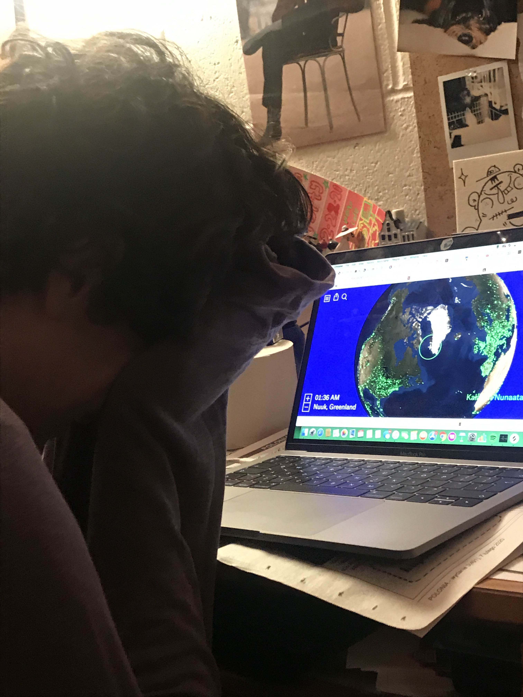

During the making of SOUP magazine, we listened to a good amount of crazy music (and ads for Old Navy) from all over the world on this really cool website that streams live radio from all over the world. Basically you just spin the globe and you can listen to whatever is going on. here's the link to radio garden, one of the coolest parts of the internet.. I highly recommend MAGNITOGORSK, RUSSIA'S radio 2 and SEOUL, SOUTH KOREA'S datafruits.